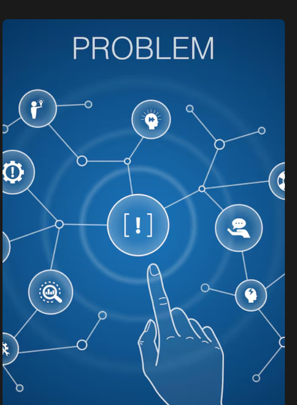
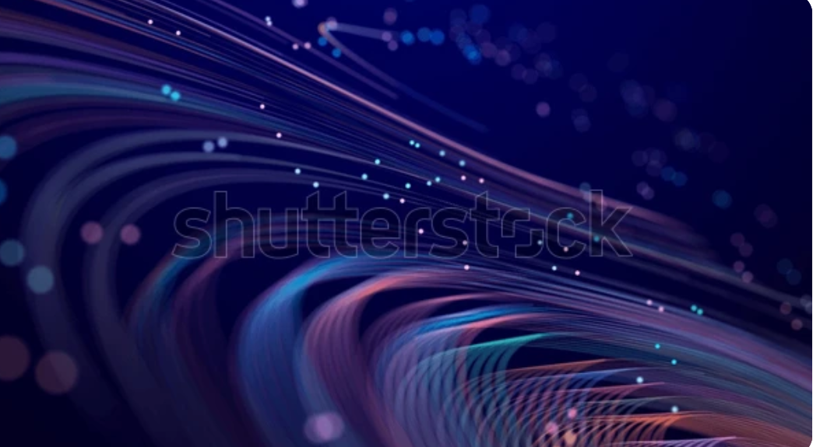

Session Time: 0 seconds
Attention State: Idle
Simulate reading interaction

Simulate focused activity

Simulate analytical attention
Clicks: 0
Keyboard Activity: 0
Mouse Movement: 0
Idle Time: 0
Tab Switches: 0
Human attention during digital work is often fragmented. Interaction signals such as mouse movement, typing, and tab switching often reveal shifts in focus.
By observing these signals we can map attention patterns without judging productivity or monitoring behaviour.
This prototype demonstrates how interaction signals can represent attention flow during digital tasks.
I speak without a mouth and hear without ears. I have no body, but I come alive with wind. What am I?
Which language is mainly used to structure web pages?
Memorize the sequence for 5 seconds:
Type the sequence:
Click the buttons below to explore how interaction signals affect attention.